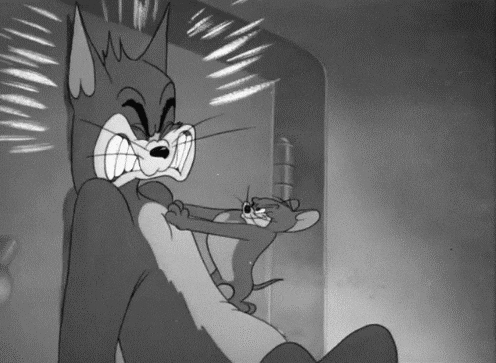
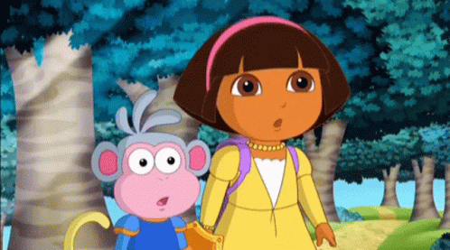
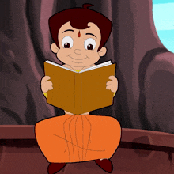

The Way How You Treat MeThe Way I Am Gonna Carry You When Something Scary Happens

The Way I Admire Your beauty Every Time I See YouThe Way I Wanna Protect You From People Who Treat You WrongThe Way How You Behave When I Ask You To Study

How You Should Be A Good Girl And Go Back To Studying